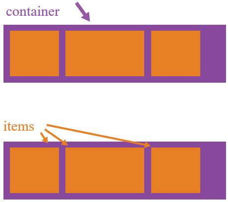
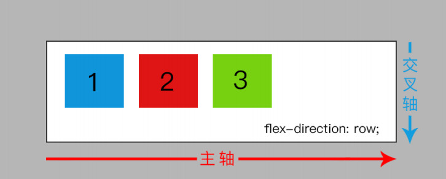
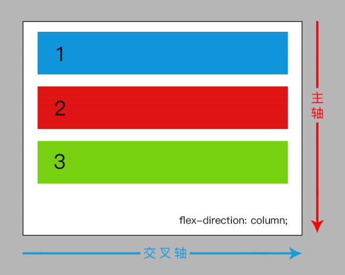
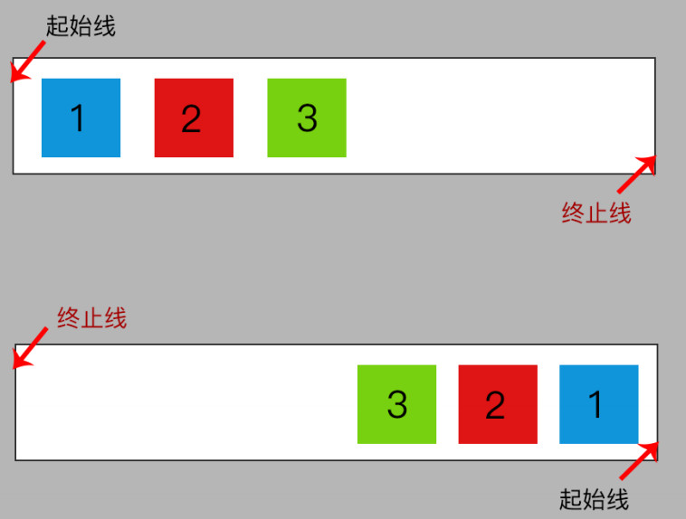
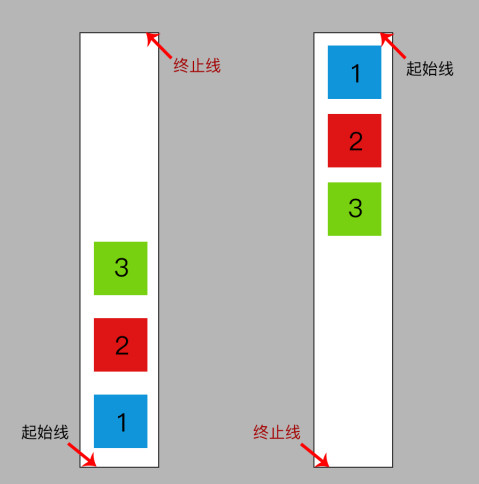
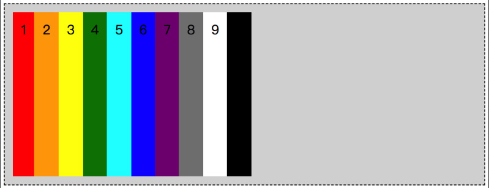
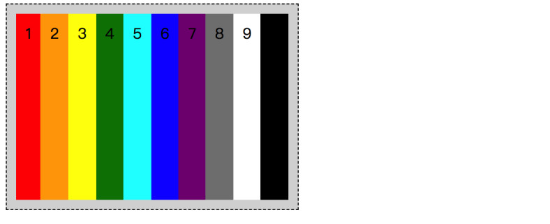
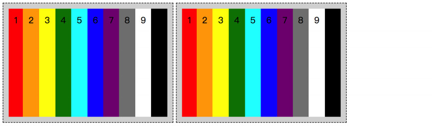

弹性盒子布局（CSS3）
使用百分比布局加 margin 需要改变百分比才能防止掉下来。
flex 属性配合 min-width、max-width 使用（防止变形太过）
min-width: 280px 最小宽度 不能小于 280px，小于280px就不再缩小。
max-width: 1280px 最大宽度 不能大于 1280px，大于1280px就不再放大。
开始使用 Flexbox ，需要将父元素变成一个 flex 容器，
为每个矩形子元素(flex item(flex项))添加 flex context （上下文）,子元素才显示为行内形式。
背景介绍
Flexbox 布局（也叫 Flex 布局，弹性盒子布局）
Flex 布局背后的主要思想是使父元素在子元素的大小未知或动态变化情况下，
能够调节子元素的高度、宽度和排布的顺序，分配好子元素之间的间隙，
从而能够最好地适应可用布局空间（能够适应不同的设备和不同大小的屏幕）。
注意：
1、父元素设为 Flex 布局以后，子元素的 float、clear 和 vertical-align 属性将失效。
如果将绝对定位添加到 display：inline-flex 的元素，它将变为块级（如display：flex），但仍会生成 flex 格式化上下文。
如果将绝对定位添加到 display：flex 的元素，则将使用“缩小以适合”算法（通常是行内容器）而不是可用的填充算法调整其大小。
2、absolute / fixed 定位的子元素不参与 flex 的布局，虽然有的浏览器允许这样写。
解决办法：既然被定位的盒子不参与 flex，那就在这个盒子外面套一个盒子，给外层盒子使用定位，内层没有使用定位的盒子就可以继续使用 flex 了。
如果将子元素为绝对定位，但不使用任何 top / right / bottom / left 属性，则 flexbox 对齐仍将对其应用。
3、当你的 display 属性值是 flex 或者 inline-flex 的时候，不要忘记伪元素也是 flex 容器的直系子元素，也是 flex 元素。
只要脱离了文档流就可以了不用受到 flex 弹性布局的影响了，所以，我们可以使用 position:absolute；的方式来解决伪元素影响 flex 布局的问题。
Flex 布局最适合应用程序的组件，小规模的布局，Gird布局适合更大规模的布局。
基本概念
Flex布局是一个完整的模块，它包含了一套完整的属性。
有的属性是设置在 container 父元素（也可以叫做 flex container）上，有的则是设置在 item子元素上（也可以叫做 flex items）上。
container 父元素控制的是整体，item 子元素控制的是个体。


在flex布局中的“轴”是由“主轴（main axis）”和“交叉轴（cross axis）”这两根轴组成，
“主轴”是根据flex-direction 而定，“交叉轴”则是垂直于“主轴”的那根。
由于“主轴”是随 flex-direction 的值而变化位置，可能是横向的，也有可能是纵向的；
但无论是哪个方向，“交叉轴”必定是垂直于“主轴”的那根。
main axis: 父元素的主轴是指子元素布局的主要方向轴，子元素默认沿主轴排列，注意主轴不一定是水平的，它由属性flex-direction来确定主轴是水平还是垂直的。


main-start|main-end: 分别表示主轴的开始和结束，子元素在父元素中会沿着主轴从main-start到main-end排布。


main size: 单个子元素在主轴的宽度或高度。
cross axis: 交叉轴，与主轴垂直。
cross-start|cross-end: 分别表示交叉轴的开始和结束。多行子元素在交叉轴的排布从cross-start到cross-end。
cross size: 单个子元素在交叉轴的宽度或高度。
属性
属性分作用于父元素的属性和作用于子元素的属性两部分介绍。
父元素属性
display属性
定义父元素是一个 flex 布局容器。设置为 flex 则父元素为块状元素，设置为 inline-flex 父元素为行内元素。
语法格式
.container {
display: flex; /* or inline-flex */
}
给div这类块级元素元素设置display:flex或者给span这类行内元素设置display:inline-flex，即可创建flex布局！
display:flex 特性
● 元素排列成一行；
●元素从主轴的“起始线”开始排列；
●元素会被拉伸来填充交叉轴的大小；
●元素不会在主轴上被拉伸，但是会缩小到自身内容所能容下的尺寸

display:inline-flex 特性

很明显可以感到两者的差异。当使用了inline-flex后，就犹如我们使用了inline-block 一样，不再是占据满满的一栏了，而是随着内容实际尺寸来改变。
假如这个时候我们有两个 .demo 的flex容器，并且浏览器的宽度足够容纳得下，那么我们可以看到的效果就是这样了。

flex 和 inline-flex 区别在于：
父元素设置 inline-flex 为 inline 特性，宽高由内容撑开，可以和图片文字一行显示；
父元素设置 flex 为 block 特性，宽度默认 100%，不和行内元素一行显示。
flex-direction属性
定义flex布局的主轴方向。flex布局是单方向布局，子元素主要沿着水平或者垂直布局。
语法格式
.container {
flex-direction: row | row-reverse | column | column-reverse;
}

row（默认值）：主轴为水平方向，起点在左边。方向为当前文档水平流方向，默认情况下是从左往右。
如果当前水平文档流方向是 rtl（如设置direction:rtl），则从右往左。
row-reverse：与row属性值方向相反，主轴为水平方向，起点在右边。
column：主轴为垂直方向，起点在上方。
column-reverse：与column属性值方向相反，主轴为垂直方向，起点在下方。
flex-wrap属性
如果一条轴线上排不下，控制子元素单行显示还是换行显示。默认情况下，flex布局中父元素会把子元素尽可能地排在同一行。
语法格式
.container{
flex-wrap: nowrap | wrap | wrap-reverse;
}
nowrap（默认）：不换行。

wrap：换行，第一行在上方。

wrap-reverse：换行，第一行在下方。

flex-flow属性
定义子元素的排列方式，是 flex-direction 属性和 flex-wrap 属性的的复合简写属性，就像margin-left 和 margin right简写为一个。
默认值是 row nowrap。
语法格式
.container {
flex-flow: <flex-direction> || <flex-wrap>;}
}
例子
.container {
display: flex;
flex-flow: row-reverse wrap-reverse;
}
justify-content属性（子元素主轴（水平轴）对齐方式）
定义子元素在主轴上的对齐方式。
当子元素大小最大的时候，分布在主轴上的剩余空间上。
子元素超出主轴时也可以控制子元素的对齐方式。
语法格式
.container {
justify-content: flex-start | flex-end | center | space-between | space-around | space-evenly;
}
具体对齐方式与轴的方向有关。下面假设主轴为从左到右。

● flex-start（默认值）：单行子元素向主轴起点左对齐。
● flex-end：单行子元素向主轴终点右对齐。
● center： 单行子元素沿着主轴居中。
● space-between：单行内每个子元素之间的间隔都相等，两端对齐。单行第一个子元素在主轴的起点，单行最后一个子元素在主轴的终点，两端对其。
● space-around：单行内每个子元素之间的间隔相等，子元素之间的间隔比（两侧）子元素离父元素边框的间隔大一倍。
● space-evenly：单行内每个子元素两侧空白间距完全相等。
align-items属性（一行子元素交叉（垂直）轴对齐方式）
定义子元素在当前行上沿着交叉轴方向的对齐方式。（注意第一个子元素和最后一个子元素会从左往右分别贴在父元素两边）
可以看作是交叉轴上的 justify-content。
语法格式
.container {
align-items: stretch | flex-start | flex-end | center | baseline;
}

● stretch（默认值）： 子元素的高度拉伸到父元素高度。（仍然满足min-width/max-width）
如果子元素未设置高度或设为auto，子元素将占满整个父元素的高度。如果子元素设置了高度，则按照设置的高度渲染，而不是占满。
● flex-start： 子元素放到交叉轴起点行的外边缘上。
● flex-end：子元素放到交叉轴终点行的外边缘上。
● center： 子元素在交叉轴居中。
● baseline： 子元素（第一行文字）按照它们的基线对齐。
align-content属性（多行子元素交叉轴对齐方式）
定义多行子元素在交叉轴上的对齐和分布方式。
前提是子元素的宽度之和比父元素的宽度要大，且父元素要设置换行（flex-wrap：wrap）
语法格式
.container {
align-content: flex-start | flex-end | center | space-between | space-around | stretch;
}

● stretch（默认值）: 多行子元素等比例拉伸占据剩余空间。例如，如果共两行子元素，则每一行拉伸高度是50%。
● flex-start：多行挤到父元素的交叉轴起点。
● flex-end：多行挤到父元素的交叉轴终点。
● center：多行挤到父元素的交叉轴中央。（多行文字垂直居中）
● space-between：多行均匀分布。第一行位于父元素交叉轴的起点，最后一行位于父元素交叉轴的终点。
● space-around：多行均匀分布。第一行与最后一行两侧的间隔相等。行与行之间的空白距离相等。
注意：
1、当只有一行的时候，align-content不起作用。
2、justify-content与align-content区别：justify-content沿主轴方向作用于每一个单行的子元素，而align-content沿交叉轴方向作用于多行的子元素。
3、align-items和align-content的区别：align-items让每一个单行的子元素逐行对齐，align-content让多行的子元素挤在一起对齐。

父元素属性总结
display: flex|inline-flex;
flex-direction: row | row-reverse | column | column-reverse;
flex-wrap: nowrap | wrap | wrap-reverse;
flex-flow: <‘flex-direction’> || <‘flex-wrap’>;
justify-content: flex-start | flex-end | center | space-between | space-around | space-evenly;
align-items: flex-start | flex-end | center | baseline | stretch;
align-content: flex-start | flex-end | center | space-between | space-around | stretch;
子元素属性
其实主要就是 flex、align-self 和 order 这三个属性，flex-grow、flex-shrink 和 flex-basis 可以简写为 flex 的。
order属性
默认情况下，所有子元素的order属性默认属性值是0，子元素按照代码书写的先后顺序布局 。
order属性可以控制子元素在父元素中出现的顺序。
子元素的order值越小，越靠近轴线的起点。
语法格式
.item { order: <integer>; /* 默认值是 0 */ }


flex-grow属性
定义子元素的放大比例
默认值为0，即如果父元素存在剩余空间，子元素也不放大。
flex-grow规定在空间允许的情况下，子元素内容两侧空隙如何按照比例平分父元素的剩余可用空间。 它接受一个无单位的值作为一个比例。
flex-grow不接受负值。
如果所有的子元素的属性都设定为1，则父元素中的剩余空间会等分给所有子元素。
如果其中某个子元素的flex-grow设定为2，则在分配剩余空间时该子元素将获得其他元素二倍的空间（至少会尽力获得）。

如果有的子元素有 flex-grow 属性，有的子元素有 width 属性，有 flex-grow 属性的项目将等分剩余空间

语法格式
.item {
flex-grow: <number>; /* 默认值是 0 */
}
这里只给给第2张图片设置flex-grow属性值

flex-grow值总和小于1，每个子元素扩大的空间等于总剩余可扩大空间乘以当前元素设置的flex-grow比例。

flex-shrink属性
定义子元素的缩小比例
默认值为1，即如果父元素空间不足时子元素将同比例缩小。
语法格式
.item {
flex-shrink: <number>; /* 默认值是 1 */
}
如果其中某个子元素的flex-shrink值为0，则空间不足时该子元素并不会缩小。

如果其中某个子元素的flex-shrink值为2时，则空间不足时该子元素会以二倍速度缩小。
flex-basis属性
定义分配剩余空间之前子元素默认的大小占据的主轴空间。可以设置为某个长度（例如 20%, 5rem,等等）或者关键字。
关键字auto意味着子元素会按照其本来的大小显示。
关键字content意味着根据内容来确定大小小——这个关键字到目前没有被很好地支持，所以测试起来比较困难，与content的类似的关键字还有max-content, min-content, fit-content。
语法格式
.item {
flex-basis: <length> | auto; /* 默认值是 auto */
}
如果设置为0, 则子元素内容两侧的空隙不会根据flex-grow按比例分配，如果设置为auto，则子元素两侧额外的空隙会根据flex-grow按照比例分配。

flex属性
flex 属性是 flex-grow、flex-shrink 和 flex-basis 属性的简写属性。
flex 属性的默认值为 0 1 auto。
推荐使用简写属性，浏览器会智能地计算出相关值。
语法格式
.item {
flex: none | [ <'flex-grow'> <'flex-shrink'>? || <'flex-basis'> ]
}
所以
● flex默认值 等于flex:0 1 auto；
● flex:none 等于flex:0 0 auto；
● flex:auto 等于 flex:1 1 auto；
● flex: 1; 等于 flex-grow:1 等于 flex: 1 1 auto;
align-self属性
items，有个s，表示子元素们，是全体。
这里是self，单独一个个体。
align-self允许单个项目有与其他项目不一样的对齐方式，可覆盖align-items属性。
默认值为auto，表示继承父元素的align-items属性，如果没有父元素，则等同于stretch。
语法格式
.item {
align-self: auto | flex-start | flex-end | center | baseline | stretch;
}
align-self 与 align-items 的唯一区别就是 align-self 多了个 auto（默认值），表示继承父元素的 align-items 属性值。

浏览器支持


最后
已经2019年了，Flex老语法不用再管了，舒爽弃之，然后私有前缀也不用再加了，看到就烦。
参考：
解决宽度溢出的原理：
解决办法是div爷元素随便设置宽度,div父元素不设置宽度，子元素设置max-width:100%，子元素宽度无限收缩，正好填满flex容器，内容不溢出。
width:max-content就是值采用宽度大的那个内容的宽度。

width:min-content的最终宽度是图片和文字最小宽度值里面大的那一个。图片的最小宽度值就是图片呈现的宽度（注意是呈现，不是原有），文本元素如果是中文，则最小宽度值就是一个中文的宽度值；如果是英文，则最小宽度可能就是里面最长的英文单词的宽度。

width:fit-content自适应原本内容的宽高，
display:inline-block水平居中要靠父元素使用text-align:center，而本身可能还需要text-align:left略烦
而width:fit-content直接margin: 0 auto水平居中又可以占位置。
flex子元素最小内容宽度min-content之和小于flex父容器宽度时， flex子元素默认的fit-content宽度之和又大于flex父容器宽度，则
1、flex子元素以fit-content宽度正常显示，内容不溢出。
2、flex子元素宽度收缩，正好填满flex容器，内容不溢出。所以当图片设置max-width:100%，父元素不设置宽度，就可以内容不溢出。